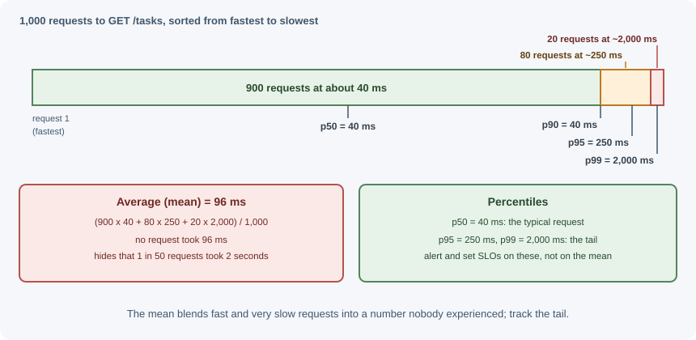

Metrics and Dashboards¶
A metric is a number measured over time: requests per second, the 95th
percentile of request latency, connections in use. Metrics are the cheapest
signal to keep and the fastest to query, which makes them the backbone of
dashboards and alerts. This lesson covers the four metric types, the
Prometheus pull model and its text format, labels and the cardinality trap,
why averages lie and percentiles cannot be averaged, how histograms and
histogram_quantile work, rate() over counters, instrumenting TaskFlow
API with prom-client, PromQL you will use every day, and how to design
Grafana dashboards people can read during an incident.
Why it matters¶
When TaskFlow API slows down, the first question is not "what happened to request 7f3a?" but "how bad is it, since when, and for whom?". Metrics answer that in seconds across months of history: error ratio by route, latency percentiles by version, saturation of the MongoDB pool. They feed every alert, every SLO, and every capacity plan.
Metrics are also easy to get subtly wrong. A label holding user IDs can take down the monitoring system, an average can show 96 ms while one request in fifty takes two seconds, and summing percentiles across pods produces numbers that describe nothing. Understanding the mechanics is the difference between a dashboard that tells the truth and one that hides the incident.
Real-world usage¶
- Prometheus (SoundCloud and the CNCF). The Prometheus overview describes a monitoring toolkit originally built at SoundCloud, with a multi-dimensional data model (metric name plus key-value labels), PromQL, and pull-based collection over HTTP. It joined the Cloud Native Computing Foundation in 2016 as its second hosted project after Kubernetes.
- Google SRE (Borgmon). The SRE book chapter Practical Alerting from Time-Series Data describes Borgmon, Google's internal time-series monitoring system, whose design (scraping a standard metrics endpoint, labels, rule evaluation) Prometheus closely resembles.
- Prometheus histogram guidance. The official
Histograms and summaries
page explains why quantiles from summaries cannot be aggregated across
instances, how
histogram_quantileestimates quantiles from buckets, and how bucket layout affects the error of the estimate. - Grafana Labs. Grafana's dashboard best practices recommend RED dashboards for services and USE dashboards for infrastructure, consistent layouts, and managing dashboards as code to avoid sprawl.
Popular tools and providers: Prometheus, Grafana, Grafana Mimir, Thanos, VictoriaMetrics, the OpenTelemetry metrics SDK, prom-client for Node.js, Datadog, Amazon CloudWatch, Google Cloud Monitoring, and Azure Monitor.
How it works¶
What a time series is¶
A Prometheus time series is identified by a metric name and a set of labels, and holds samples: (timestamp, float value) pairs.
http_request_duration_seconds_count{job="taskflow-api", instance="api-1:9464",
method="POST", route="/tasks", status_code="201"}
@1763042400 10250
@1763042415 10281
@1763042430 10309
Every distinct combination of name and label values is a separate series.
job and instance are added by Prometheus at scrape time; the others
come from the application.
Metric types¶
| Type | Behaviour | Use for | TaskFlow example |
|---|---|---|---|
| Counter | Only goes up (resets to 0 when the process restarts) | Counting events | taskflow_tasks_created_total, requests, errors |
| Gauge | Goes up and down | Current state | mongodb_pool_connections_in_use, queue depth, memory |
| Histogram | Counts observations into cumulative buckets, plus _sum and _count |
Distributions you aggregate: latency, payload size | http_request_duration_seconds |
| Summary | Computes quantiles in the client over a sliding window, plus _sum and _count |
Precise quantiles for one instance only | Rare in services; avoid for aggregated latency |
Rules of thumb: never read a counter's raw value (wrap it in rate() or
increase()); never use a gauge for something that only increases; use a
histogram, not a summary, for latency you want to aggregate across pods.
OpenTelemetry has the same ideas under slightly different names (Counter,
UpDownCounter, Gauge, Histogram).
Naming conventions from the Prometheus docs: a prefix for the domain
(taskflow_, http_), base units in the name (_seconds, _bytes, never
milliseconds), and _total on counters.
The pull model¶
![Diagram: Prometheus uses service discovery and scrapes every 15 seconds with GET /metrics against two TaskFlow API pods exposing prom-client metrics on port 9464, a node exporter for host CPU and disk, and a blackbox exporter that probes public URLs. Inside Prometheus, samples go to the local TSDB (15 days by default) and recording and alert rules run. Grafana sends PromQL queries for dashboards, alerts go to Alertmanager, and remote write copies data to long-term storage such as Mimir or Thanos. A nightly backup batch job pushes to a Pushgateway, which keeps the last push and is scraped.](../prometheus-scrape-model.svg)
Prometheus pulls: on every scrape interval it discovers targets (static
lists, Kubernetes pods, cloud instances), sends GET /metrics to each, and
stores the samples it receives. Each scrape also produces a synthetic up
series: 1 if the scrape succeeded, 0 if not.
Why pull:
- Prometheus knows which targets should exist, so a dead target shows up
immediately as
up == 0instead of silently going quiet. - Targets stay simple: they only expose current values over HTTP.
- You can
curlany target's/metricsto see exactly what it reports. - The scrape interval, not the application, controls load on the monitoring system.
The trade-off is that Prometheus must be able to reach every target over the network, and a process that lives for a few seconds may finish between scrapes. That is what the Pushgateway is for, and only that (see Practical examples).
The default scrape_interval is one minute; 15 to 30 seconds is common
for services. A query looks back at most five minutes for a series' latest
sample, and series that vanish from a scrape (or whose target disappears)
are marked stale, so they drop out of queries quickly.
The exposition format¶
GET /metrics returns plain text. A trimmed example from TaskFlow API:
# HELP http_request_duration_seconds HTTP request duration in seconds
# TYPE http_request_duration_seconds histogram
http_request_duration_seconds_bucket{le="0.05",method="GET",route="/tasks",status_code="200"} 9120
http_request_duration_seconds_bucket{le="0.1",method="GET",route="/tasks",status_code="200"} 9700
http_request_duration_seconds_bucket{le="0.25",method="GET",route="/tasks",status_code="200"} 9950
http_request_duration_seconds_bucket{le="+Inf",method="GET",route="/tasks",status_code="200"} 10000
http_request_duration_seconds_sum{method="GET",route="/tasks",status_code="200"} 512.7
http_request_duration_seconds_count{method="GET",route="/tasks",status_code="200"} 10000
# HELP mongodb_pool_connections_in_use MongoDB connections currently checked out of the pool
# TYPE mongodb_pool_connections_in_use gauge
mongodb_pool_connections_in_use 3
# HELP taskflow_tasks_created_total Tasks successfully created
# TYPE taskflow_tasks_created_total counter
taskflow_tasks_created_total{source="web"} 48211
# HELP and # TYPE describe each metric. Histogram buckets are
cumulative: le="0.1" counts every request that took at most 0.1 s,
including those already counted in le="0.05", and le="+Inf" always
equals _count. The OpenMetrics format is a closely related
standardization of the same text format.
Labels and the cardinality trap¶
Labels make metrics useful (error ratio per route) and also make them expensive, because the number of series is the product of the number of values of each label.
![Diagram: bounded labels on http_request_duration_seconds: 5 methods times 40 route templates times 10 status codes times 14 series per histogram label set times 10 pods equals 280,000 active series, where 14 is 11 bucket boundaries plus the +Inf bucket plus _sum plus _count with prom-client's default buckets. Adding one unbounded label, user_id with 50,000 users, multiplies 280,000 by 50,000 to give 14,000,000,000 series and exhausts memory. Fix: keep user IDs, request IDs, and raw paths in logs and spans, and label metrics only with small, fixed sets such as method, route template, and status code.](../cardinality-explosion.svg)
Worked through:
method (5) x route (40) x status_code (10) = 2,000 label sets
x 14 series per histogram label set = 28,000 series per pod
x 10 pods (the instance label) = 280,000 series
Each active series costs memory in Prometheus's head block
(on the order of a few KB including index overhead).
Add user_id with 50,000 active users = 14,000,000,000 series
In practice actual counts are lower (not every route returns every status), but the multiplication is what matters. Real explosions usually come from:
- Raw URLs as labels:
/tasks/6650f1c2...instead of the template/tasks/:id. Every task becomes a series. - IDs: user, tenant, request, session, or trace IDs.
- Unbounded strings: error messages, user agents, email domains.
- Too many histogram buckets multiplied by many labels.
Find the culprits with prometheus_tsdb_head_series (total active series),
Prometheus's TSDB status page (top metrics and labels by series count), or
topk(10, count by (__name__) ({__name__=~".+"})). Fix them at the source,
or drop labels at scrape time with metric_relabel_configs.
Counters and rate()¶
A counter's raw value depends on when the process started, so it is almost
never what you want. rate() computes the per-second average increase
over a time window:
counter at 14:00:00 = 12,000 counter at 14:05:00 = 12,600
rate(...[5m]) = (12,600 - 12,000) / 300 s = 2 requests per second
increase(...[5m]) = 600 requests
rate() also handles counter resets: if a pod restarts and the counter
drops from 12,400 to 0 and climbs to 150, rate() treats the drop as a
reset and counts 150 more, instead of a negative rate.
Two rules prevent most mistakes:
rate()first, thensum().sum(rate(x[5m]))is correct;rate(sum(x)[5m:])(a subquery;rate(sum(x)[5m])does not even parse) is not, because summing first hides individual counter resets.- Make the range a few times the scrape interval (a common guideline
is at least four), so each window contains enough samples. With a 15 s
interval,
[1m]is the practical minimum and[5m]is typical for dashboards.
irate() uses only the last two samples; it reacts faster but is noisy,
and is meant for graphs of fast-moving counters, not alerts.
Percentiles compared with averages¶

The p95 (95th percentile) is the value that 95% of observations are less than or equal to. Latency distributions are skewed: most requests are fast and a long tail is very slow. The mean mixes them into a number no request experienced, and it barely moves when the tail gets worse. The tail matters because heavy users make many requests per page and will hit the p99 often, and because the slowest requests are frequently the most valuable (the largest task lists, the busiest customers).
You cannot average percentiles. Suppose two pods serve GET /tasks:
Pod A: 900 requests, all ~100 ms -> p99 = 100 ms
Pod B: 100 requests, 50 at ~100 ms, 50 at ~2 s -> p99 = 2,000 ms
avg(p99) = (100 + 2,000) / 2 = 1,050 ms <- describes no request
Actual combined distribution: 950 at ~100 ms, 50 at ~2 s
true p99 (request 990 of 1,000) = 2,000 ms
true p95 (request 950 of 1,000) = 100 ms
Percentiles depend on the whole distribution, so the only correct way to combine them is to combine the underlying data first. This is exactly what histogram buckets allow, and what client-side summaries do not.
Histograms and histogram_quantile¶
Because buckets are counters, you can rate() them, sum() them across
pods, and then estimate a quantile from the combined distribution:
histogram_quantile(0.95,
sum by (le, route) (rate(http_request_duration_seconds_bucket[5m])))
The function finds the bucket containing the target rank and linearly interpolates inside it. Worked example with rates per second summed over all pods:
le="0.1" 9,000 le="0.25" 9,700 le="0.5" 9,950 le="+Inf" 10,000
target rank for p95 = 0.95 x 10,000 = 9,500 -> falls in (0.1, 0.25], which holds 700
position inside the bucket = (9,500 - 9,000) / 700 = 0.714
estimate = 0.1 + 0.714 x (0.25 - 0.1) = 0.207 s
The true p95 could be anywhere between 0.1 and 0.25 s; the estimate assumes observations are spread evenly in the bucket. Consequences:
- Choose buckets around the values you care about, especially your
SLO threshold. With a bucket boundary at exactly 0.3 s, "fraction of
requests faster than 300 ms" is exact, not estimated:
sum(rate(..._bucket{le="0.3"}[5m])) / sum(rate(..._count[5m])). - If the quantile lands in the
+Infbucket, the result is the highest finite boundary, so a top bucket of 10 s caps every estimate at 10 s. - More buckets mean more accuracy and more series (cardinality again).
- Prometheus also supports native histograms, which pick exponentially spaced buckets automatically and store them compactly; check that your Prometheus server and client library versions support them before adopting them.
| Histogram | Summary | |
|---|---|---|
| Quantiles computed | At query time, on the server | In the client process |
| Aggregate across pods | Yes | No (quantiles are not additive) |
| Accuracy | Depends on bucket layout | Precise within its configured error, for that one process |
| Change quantile later | Yes, any quantile | No, fixed at instrumentation time |
| Client cost | Cheap (increment a bucket) | Higher (streaming quantile estimation) |
Dashboards that work during incidents¶
A dashboard is a tool for answering questions under pressure. Design them in layers:
- Service overview (RED): one row per service with request rate, error ratio, and p50/p95/p99 latency, plus SLO status. Every service dashboard has the same layout, so on-call engineers can read any of them.
- Service detail: the same RED panels split by route, status code, and version; dependency panels (MongoDB latency, outbound call errors); runtime saturation (event loop lag, heap, CPU throttling).
- Resource dashboards (USE): nodes, databases, queues, connection pools: utilization, saturation, errors.
Design rules:
- Put the most important panel top-left; read top to bottom from symptom to cause.
- Use template variables (
$env,$service,$route) instead of copying dashboards per service. - Show deploys as annotations so every graph answers "did a release cause this?".
- Set units (seconds, requests/s, percent) and SLO threshold lines on every panel.
- Prefer percentiles and ratios to raw counts; avoid pie charts and gauges for time-based questions.
- Keep dashboards in version control (provisioned JSON or code), reviewed like any other change, and delete the ones nobody opens.
When to use and when not to use¶
| Situation | Choose | Why |
|---|---|---|
| Request latency across many pods | Histogram | Aggregatable; any quantile later |
| Exact quantile inside one process, no aggregation | Summary | Precise for that process |
| Current value (queue depth, connections) | Gauge | Goes up and down |
| Number of events | Counter with rate() |
Robust to restarts |
| Per-user or per-request detail | Logs or spans | Unbounded values destroy metrics |
| Long-running service | Prometheus scrape | Built-in liveness via up |
| Batch job that runs for seconds | Pushgateway (or the job's completion timestamp in logs) | It may never be scraped |
| Many services and vendors, one instrumentation API | OpenTelemetry metrics, exported to Prometheus or OTLP | Vendor-neutral |
Do not use metrics for data that must be exact per event (billing, audits); Prometheus is designed for operational monitoring, where a few lost samples or an estimated quantile are acceptable.
Practical examples¶
Instrumenting TaskFlow API with prom-client¶
// src/metrics/http.js
import client from "prom-client";
export const register = client.register;
client.collectDefaultMetrics({ register }); // CPU, memory, event loop lag, GC, handles
export const httpDuration = new client.Histogram({
name: "http_request_duration_seconds",
help: "HTTP request duration in seconds",
labelNames: ["method", "route", "status_code"],
// Boundaries around TaskFlow's targets, including the 300 ms SLO threshold.
buckets: [0.025, 0.05, 0.1, 0.2, 0.3, 0.5, 1, 2.5, 5],
});
export function metricsMiddleware(req, res, next) {
const end = httpDuration.startTimer();
res.on("finish", () => {
// Route template ("/tasks/:id"), never the raw URL; one value for 404s.
const route = req.route ? req.baseUrl + req.route.path : "unmatched";
end({ method: req.method, route, status_code: String(res.statusCode) });
});
next();
}
// src/metrics/server.js: metrics on a separate, internal-only port
import express from "express";
import { register } from "./http.js";
export function startMetricsServer(port = 9464) {
const metricsApp = express();
metricsApp.get("/metrics", async (req, res) => {
res.set("Content-Type", register.contentType);
res.end(await register.metrics());
});
return metricsApp.listen(port);
}
// src/server.js
import express from "express";
import { metricsMiddleware } from "./metrics/http.js";
import { startMetricsServer } from "./metrics/server.js";
import { tasksRouter } from "./tasks/router.js";
const app = express();
app.use(metricsMiddleware); // before the routers, so every request is timed
app.use(express.json());
app.use("/tasks", tasksRouter);
app.listen(3000);
startMetricsServer(9464);
Parts: startTimer() returns a function that observes the elapsed seconds
with the labels you pass; req.route is only set when a route matched, so
unmatched paths collapse into one label value; the histogram's _count
series doubles as the request counter. Port 9464 is not exposed through
the public load balancer, so internal metrics are not visible to the
internet.
Prometheus configuration and recording rules¶
# prometheus/prometheus.yml
global:
scrape_interval: 15s
evaluation_interval: 15s
rule_files:
- /etc/prometheus/rules/*.yml
alerting:
alertmanagers:
- static_configs:
- targets: ["alertmanager:9093"]
scrape_configs:
- job_name: taskflow-api
static_configs:
- targets: ["api-1:9464", "api-2:9464"]
labels:
env: production
metric_relabel_configs:
# Safety net: drop a label that must never reach storage.
- action: labeldrop
regex: user_id
# prometheus/rules/taskflow-recording.yml
groups:
- name: taskflow-http
rules:
- record: job_route:http_requests:rate5m
expr: sum by (job, route) (rate(http_request_duration_seconds_count[5m]))
- record: job_route:http_request_errors:ratio_rate5m
expr: |
sum by (job, route) (rate(http_request_duration_seconds_count{status_code=~"5.."}[5m]))
/
sum by (job, route) (rate(http_request_duration_seconds_count[5m]))
- record: job_route:http_request_duration_seconds:p95_5m
expr: |
histogram_quantile(0.95,
sum by (job, route, le) (rate(http_request_duration_seconds_bucket[5m])))
Recording rules precompute expensive expressions every evaluation interval
and store the results as new series, so dashboards and alerts stay fast.
Their names follow the level:metric:operations convention from the
Prometheus docs.
A PromQL cookbook for TaskFlow¶
# Requests per second, whole service
sum(rate(http_request_duration_seconds_count{job="taskflow-api"}[5m]))
# Error ratio per route (5xx / all)
job_route:http_request_errors:ratio_rate5m{job="taskflow-api"}
# p99 latency by version during a rolling deploy (version from build_info)
histogram_quantile(0.99,
sum by (le, version) (
rate(http_request_duration_seconds_bucket{job="taskflow-api"}[5m])
* on (instance) group_left (version) taskflow_build_info))
# Share of requests faster than the 300 ms SLO threshold
sum(rate(http_request_duration_seconds_bucket{job="taskflow-api", le="0.3"}[5m]))
/
sum(rate(http_request_duration_seconds_count{job="taskflow-api"}[5m]))
# Targets that failed their last scrape
up{job="taskflow-api"} == 0
# Tasks created in the last hour compared with the same hour a week ago
sum(increase(taskflow_tasks_created_total[1h]))
/
sum(increase(taskflow_tasks_created_total[1h] offset 1w))
The version query joins each pod's latency buckets with its
taskflow_build_info series (from
observability fundamentals) so latency can
be compared between the old and new release.
Provisioning Grafana from files¶
# grafana/provisioning/datasources/prometheus.yaml
apiVersion: 1
datasources:
- name: Prometheus
type: prometheus
access: proxy
url: http://prometheus:9090
isDefault: true
# grafana/provisioning/dashboards/taskflow.yaml
apiVersion: 1
providers:
- name: taskflow
folder: TaskFlow
type: file
options:
path: /var/lib/grafana/dashboards
Dashboard JSON files exported from Grafana are committed to the repository
and mounted at /var/lib/grafana/dashboards, so every environment gets the
same reviewed dashboards and a broken edit can be reverted.
Pushing from a batch job¶
A nightly backup job finishes in minutes and may never be scraped. It pushes one gauge to the Pushgateway on success:
# scripts/backup.sh (last step, only reached when the backup succeeded)
cat <<EOF | curl --fail --silent --show-error --data-binary @- \
"http://pushgateway.monitoring.internal.example.com:9091/metrics/job/taskflow_backup"
# TYPE taskflow_backup_last_success_timestamp_seconds gauge
taskflow_backup_last_success_timestamp_seconds $(date +%s)
EOF
# Alert when the last successful backup is older than 26 hours
time() - taskflow_backup_last_success_timestamp_seconds{job="taskflow_backup"} > 26 * 3600
Pushing a timestamp of success is deliberate: if the job stops running entirely, the value goes stale in an obvious way and the alert fires. The Pushgateway never forgets a pushed series on its own, which is why it is not a substitute for scraping long-running services.
Best practices¶
- Follow RED for every service and USE for every resource; give every service dashboard the same layout.
- Use histograms for latency, with bucket boundaries at your SLO thresholds.
- Label with bounded values only: method, route template, status code, version. Never IDs, raw paths, or free text.
- Always
rate()counters before aggregating; choose ranges of at least a few scrape intervals. - Never average percentiles; aggregate buckets, then compute quantiles.
- Use base units and Prometheus naming conventions (
_seconds,_bytes,_total). - Precompute heavy queries with recording rules.
- Keep
/metricsoff the public internet. - Watch Prometheus itself: active series, scrape failures, rule evaluation time.
- Keep dashboards in version control and annotate deploys.
In production¶
- Prometheus memory doubles after a deploy and it restarts in a loop.
Detect:
prometheus_tsdb_head_seriesjumps at the deploy time; the TSDB status page shows one metric with millions of series. Cause: a new label with unbounded values, typically the raw URL path whenreq.routewas not used. Fix: label by route template, add alabeldropor drop rule as a stopgap, and add a review checklist item for new labels. - The p99 graph shows exactly 5 s during an outage, every time.
Detect: the latency panel flattens at a round number while users
report 20-second waits. Cause: the quantile fell in the
+Infbucket, andhistogram_quantilereturns the highest finite boundary. Fix: add buckets that cover realistic worst cases (and your client timeout) and also chart the fraction of requests over the SLO threshold. - Request rate spikes at every deploy.
Detect: sawtooth artefacts in rate graphs aligned with pod restarts.
Cause: the query sums counters before applying
rate(), so when one pod restarts the sum drops, andrate()misreads that drop as a counter reset and adds a false spike. Fix: usesum(rate(counter[5m])), neverrate(sum(counter)[5m:]). - A pod is broken but dashboards look fine.
Detect: users see intermittent errors;
up{job="taskflow-api"}shows one target at0. Cause: the broken pod cannot be scraped, so its errors never reach the aggregate, and no alert coversup. Fix: alert onup == 0for longer than a few scrape intervals, and on SLO metrics measured at the load balancer. - The dashboard is too slow to load during an incident.
Detect: panels time out exactly when traffic is high. Cause:
heavy
histogram_quantilequeries over many series and long ranges, run on every refresh by every viewer. Fix: recording rules for dashboard queries, sensible default time ranges, and fewer panels per dashboard. - A batch job's metric says it succeeded, but it has not run for days. Detect: the job's last-success gauge in the Pushgateway is old, yet nothing alerted. Cause: the alert checks for failure values, and a job that never runs never pushes a failure. Fix: push a success timestamp and alert on its age.
Important terminology¶
- Time series: A metric name plus a unique set of label values, with timestamped samples.
- Label: A key-value pair that adds a dimension to a metric.
- Cardinality: The number of distinct series a metric produces.
- Counter / gauge / histogram / summary: The four Prometheus metric types.
- Scrape: One HTTP pull of a target's
/metricsendpoint. - Exposition format: The text format served at
/metrics. - Percentile (quantile): The value below which a given fraction of observations fall (p95 = 0.95 quantile).
- Bucket: A cumulative histogram counter for observations at or below
a boundary (
le). rate(): Per-second average increase of a counter over a range, adjusted for resets.- Recording rule: A query evaluated periodically and stored as a new series.
- Pushgateway: A cache that holds metrics pushed by short-lived jobs until Prometheus scrapes them.
- PromQL: Prometheus's query language.
Common mistakes and misconceptions¶
- Using raw paths, IDs, or error messages as label values.
- Alerting on or charting average latency.
- Averaging or summing percentiles across instances.
- Reading raw counter values or applying
rate()aftersum(). - Using a summary for latency that must be aggregated across pods.
- Default buckets that do not include the SLO threshold or realistic timeouts.
- Measuring in milliseconds in one service and seconds in another.
- Using the Pushgateway to turn Prometheus into a push system for services.
- Building one dashboard per person instead of a shared, layered set.
- Exposing
/metricspublicly, leaking internal details.
Revision questions¶
- When would you use a counter, a gauge, and a histogram? Give a TaskFlow example of each.
- Why does Prometheus pull, and what problem does the
upmetric solve? - A histogram with 9 buckets has labels method (4 values), route (25 values), and status_code (8 values), on 6 pods. How many series is that? (Each label set has 9 + 1 + 2 = 12 series; 4 x 25 x 8 = 800 label sets; 800 x 12 x 6 = 57,600 series.)
- A counter goes from 30,000 to 31,800 in 10 minutes. What do
rate(x[10m])andincrease(x[10m])return? (3 per second and 1,800.) - Why is the average of two pods' p99 latencies not the service's p99?
- Using cumulative bucket rates
le="0.2"= 800,le="0.5"= 960, and+Inf= 1,000, estimate the p90. (Rank 900 falls in (0.2, 0.5], which holds 160; (900 - 800) / 160 = 0.625; 0.2 + 0.625 x 0.3 = 0.3875 s.) - When is a Pushgateway appropriate, and what should a batch job push?
- How would you lay out a dashboard for TaskFlow API so an on-call engineer can find the cause of a latency spike?